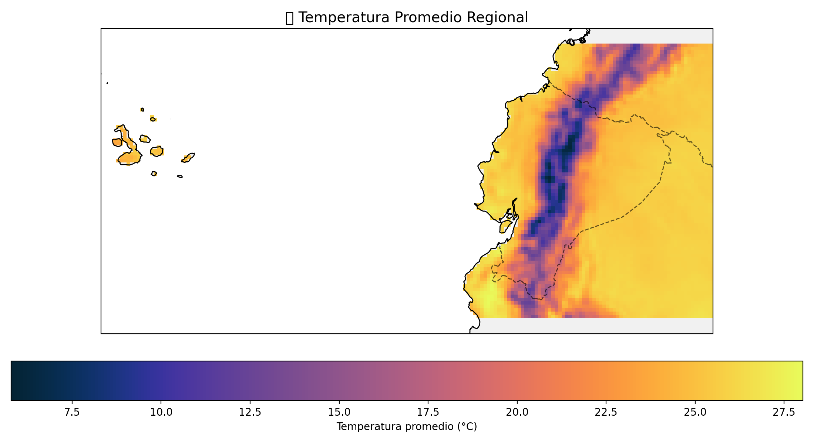
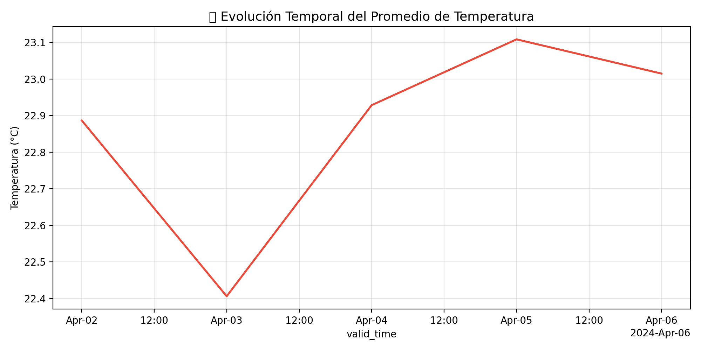

Este informe presenta un análisis de datos climáticos en formato NetCDF utilizando Python. El propósito es explorar la variación de la temperatura sobre el territorio ecuatoriano mediante herramientas científicas para el procesamiento y visualización de información geoespacial.
El estudio busca mostrar cómo los datos satelitales pueden procesarse de forma automatizada y visualmente atractiva para obtener indicadores ambientales relevantes.
Se utilizaron datos climáticos descargados en formato NetCDF (.nc), procesados con las librerías xarray, numpy, matplotlib, cartopy y cmocean. Estos paquetes permiten abrir, manipular y representar información multidimensional de manera eficiente.
El código fue diseñado para adaptarse automáticamente a diferentes estructuras de archivos NetCDF, detectando nombres de variables y dimensiones sin requerir modificaciones manuales.
Los gráficos generados permiten visualizar el comportamiento térmico en Ecuador a partir de los datos procesados. A continuación se muestran ejemplos del resultado visual del análisis:
 El mapa muestra la distribución espacial de las temperaturas promedio, mientras que la serie temporal permite observar la variabilidad del promedio regional a lo largo del tiempo.
El código desarrollado cumple varias funciones clave:
En conjunto, este flujo de trabajo permite transformar datos satelitales crudos en productos interpretables para la gestión ambiental y el monitoreo climático.
El análisis demostró que Python ofrece una plataforma poderosa para la manipulación de datos climáticos. La combinación de bibliotecas como xarray y cartopy facilita el estudio de patrones espaciales y temporales de la temperatura en Ecuador.
El código puede ampliarse para incluir nuevas variables (precipitación, humedad, NDVI, etc.) o integrarse con visores interactivos para la comunicación de resultados científicos.